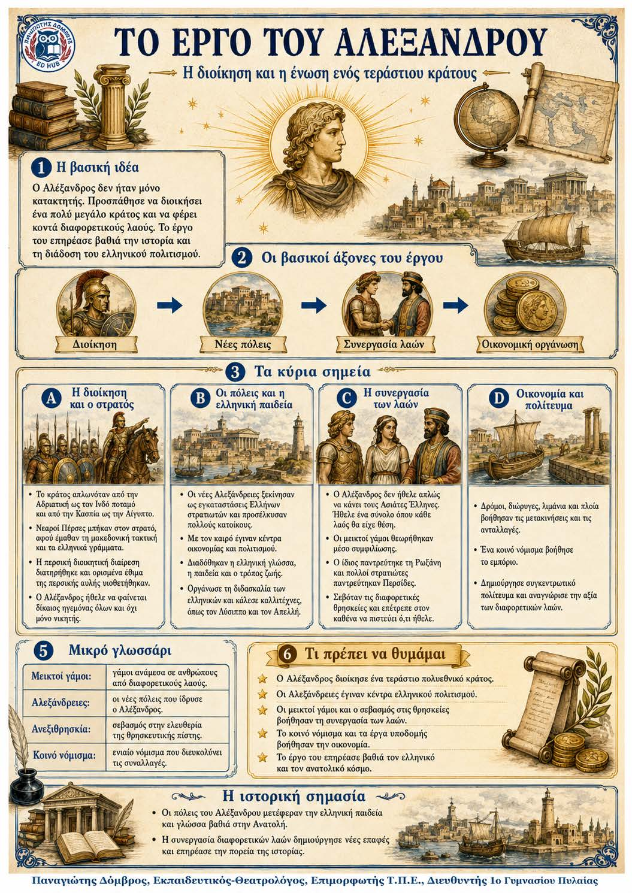

Πληροφοριογράφημα ενότητας
Το πληροφοριογράφημα αυτής της ενότητας δεν έχει ανέβει ακόμη. Οι σημειώσεις παραμένουν πλήρως διαθέσιμες.

Η διοίκηση και η ένωση ενός τεράστιου κράτους
Οι κατακτήσεις δημιούργησαν ένα τεράστιο κράτος με πολλούς λαούς, γλώσσες και θρησκείες. Ο Αλέξανδρος προσπάθησε να το ενώσει χωρίς να φέρεται μόνο ως κατακτητής. Συνδύασε μακεδονικά και περσικά στοιχεία, ίδρυσε νέες πόλεις, ενθάρρυνε τους μεικτούς γάμους και διευκόλυνε την παιδεία, το εμπόριο και τις μετακινήσεις.
